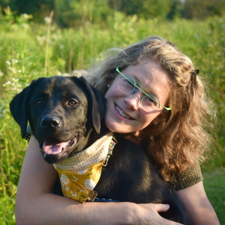
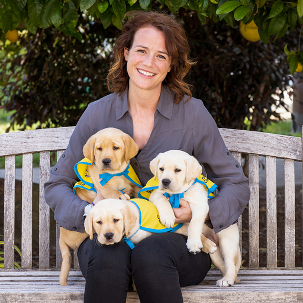
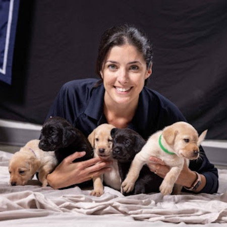
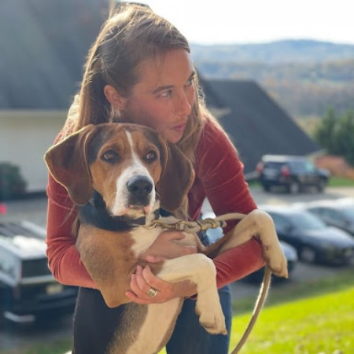
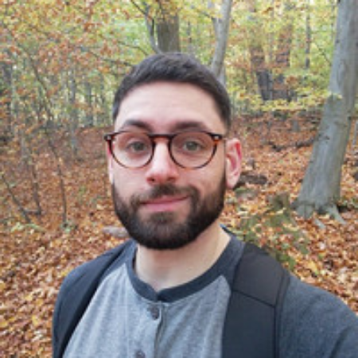
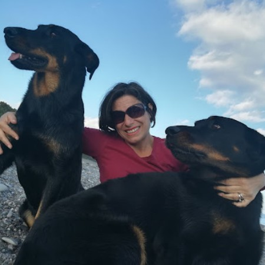
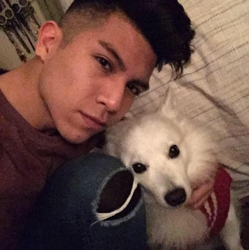
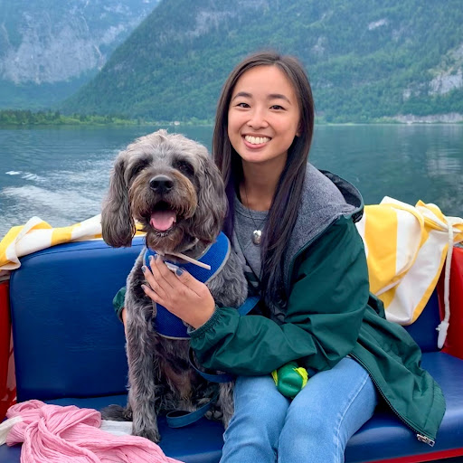

ManyDogs Leadership Team
Co-Directors
Sarah-Elizabeth Byosiere, CAAB

Dr. Byosiere a co-founder and co-director of the ManyDogs Project. She is also a project coordinator for ManyDogs 1. Dr. Byosiere is the Director of the Thinking Dog Center at CUNY Hunter College where she focuses on studying the behavior and cognition of domestic dogs, canids, and other companion animals. She began her career at the University of Michigan and has worked at various canine cognition and behavior research groups including the Duke Canine Cognition Center, the Clever Dog Lab, and the Wolf Science Center.
Jeffrey R. Stevens

Dr. Stevens is a Susan J. Rosowski Associate Professor of Psychology at the University of Nebraska-Lincoln, where he leads the Canine Cognition and Human Interaction Lab studying dog behavior/cognition and canine-human interaction. He obtained his undergraduate degree at Baylor University and completed his Ph.D. at the University of Minnesota, followed by a postdoctoral fellowship at Harvard University and a research scientist position at the Max Planck Institute for Human Development. He has worked with 15 different species, ranging from fish to birds to primates. He’s now settled down to two: dogs and humans.
Assistant Directors
Emily Bray - Community Building and Network Expansion

Dr. Bray is a Postdoctoral Research Associate at the Arizona Canine Cognition Center in the College of Veterinary Medicine and at Canine Companions, the largest US non-profit providing service dogs to people with disabilities. She earned her undergraduate degree at Duke University, completing a senior thesis at the Duke Canine Cognition Center investigating context specificity of inhibitory control in pet dogs. She then went on to earn a Ph.D. from the Department of Psychology at the University of Pennsylvania. For her dissertation, she partnered with The Seeing Eye—the oldest guide dog school in the United States—to conduct a longitudinal study investigating the development of behavior and cognition in dogs. Most recently, in her postdoctoral research, she develops and implements cognitive tasks in hundreds of dogs from Canine Companions’ population.
Liz Hare - Data Management and Open Science

Dr. Hare leads Dog Genetics LLC where she consults on genetics and genomics research and breeding program planning in dogs. Dr. Hare earned her undergraduate degree at Bryn Mawr College before completing her Ph.D. at George Washington University. Dr. Hare then held research positions at Cornell University, the Animal Improvement Programs Laboratory for the United States Department of Agriculture, University of Texas Health Science Center San Antonio, and Texas Tech University. At Dog Genetics LLC, she has consulted for the Transportation Security Administration Canine Breeding and Development Center, Leader Dogs for the Blind, and Penn Vet Working Dog Center.
Madeline Pelgrim - Methods Development

Madeline is a graduate student in the Brown Dog Lab at Brown University’s Department of Cognitive, Linguistic, & Psychological Sciences. She completed her undergraduate degree at the University of Toronto studying Psychology and Biology. Madeline’s current research explores how dogs make decisions, using head-mounted eye trackers to categorize dogs’ daily environment.
Committee members
Community Building and Network Expansion
Lucia Lazarowski

Dr. Lazarowski is a Research Assistant Professor at Auburn University College of Veterinary Medicine and Chief Scientist at Auburn University Canine Performance Sciences. Her research aims to improve detection dog selection, training, and performance by investigating factors related to early development, cognition, olfaction, and welfare.
Courtney Sexton

Courtney is a PhD candidate at The George Washington University Department of Anthropology’s Center for the Advanced Study of Human Paleobiology (CASHP), where she studies human-animal interactions and evolution. She is especially interested in how dogs can inform what we know about the evolution of nonverbal communication and social relationships. Courtney is passionate about scientific outreach and journalism, and often ropes her hound, Sonder, into helping out.
Andrea Sommese

Dr. Sommese has worked mostly with canids, on topics spacing between ecology and behavior. His particular field of expertise is dog-human communication and dogs’ cognition. In the last 3 years, his research focused on language learning in dogs. The gifted dog project received considerable attention from the media, especially since it was the first live broadcast scientific event of its kind (‘the Genius Dog Challenge’). The outcome of this research has been featured in many news reports across TV, radio, newspapers, and other platforms.
Data Management and Open Science Committee
Daniela Alberghina

Dr. Alberghina is an Associate Professor of Veterinary Ethology and Animal Welfare at Università degli Studi di Messina. Her research focuses on management factors that could affect the welfare of animal domestic species and on factors influencing the development of stereotypic behaviors. She is Diplomate at the European College of Animal Welfare and Behavioral Medicine (AWSEL).
Bryan Perez

Brian is a volunteer at the Hunter College Thinking Dog Center and lab technician at Rockefeller University. His interests are on human-nonhuman animal interactions and bonds of domestic and wild species. He has a preference in studying canine cognition and behavior such as language, communication, emotions, and perception. He graduated from undergrad at City University of New York, Hunter College studying Psychology: Animal Behavior and in the Animal Behavior & Conservation Masters Advanced Certificate program. He has been helping in the Thinking Dog Center in behavioral coding of stress behavior in dog shelters, handling dogs for the Impossible tasks and Bolgna Study. He participated in the draft writing intro and as an election teller for ManyDogs.
Funding Committee
Daphna Buchsbaum

Dr. Buchsbaum is an Assistant Professor of Cognitive, Linguistic and Psychological Sciences at Brown University. She directs the Computational Cognitive Development Lab, and its sister lab the Brown Dog Lab. Dr. Buchsbaum completed her postdoctoral work as a Senior Research Fellow in the University of St. Andrews Psychology department. She completed her doctoral training the UC Berkeley Psychology department, as well as a master’s degree in the UC Berkeley Statistics department, focusing on applications of probability theory and statistical computing. Before that, she completed a master’s degree at the MIT Media Lab, working on social learning in interactive animated characters.
Valerie Kuhlmeier
Dr. Kuhlmeier is a Professor in the Department of Psychology, Queen’s University (Kingston, Ontario, Canada). Her research program explores cognition from a developmental and evolutionary perspective. She examines the origins of our cognitive capacities in a comparative manner, studying infants, young children, non-human primates, and dogs.
Methods Development Committee
Mia Hickey
Mia is an undergraduate student at the University of Arizona. She’s currently in her senior year at the University of Arizona. For her senior thesis, she’s working on ManyDogs 1 with the Arizona Canine Cognition Center. She helps to run the experiments, and she’s collecting data on the effect of canine engagement on experimental performance for her thesis question.
Hoi-Lam Jim

Dr. Jim is a Research Officer for Dogs Trust (UK). She is interested in animal behaviour and cognition in a variety of species to further our understanding of social cognition in human and non-human animals. She obtained her PhD on eavesdropping in dogs, wolves, and elephants at the University of Veterinary Medicine Vienna, Austria.
Project Selection and Monitoring Committee
Robert Ian Bowers
Dr. Bowers is an Assistant Professor in the Department of Psychology and Neuroscience Programme, Bilkent University, Ankara. He studies behaviour and cognition in specific ecological contexts, notably feeding and mate choice. His research employs a range of methods in several laboratory contexts, including conditioning techniques, cognitive modelling, and simulation of evolutionary processes. Some specific areas of focus include causal reasoning and social influences on mate choice. A general orienting basis for his research is a systems theoretic perspective, behaviour systems theory, which places focus on how multiple behaviours interrelate. Thinking in terms of structured, complex systems helps address questions about complex patterns of behaviour and cognition.
Camila Cavalli

Dr. Cavalli is a Postdoctoral Research Fellow in the Human Animal Interaction Lab, Animal Welfare Program, Faculty of Land and Food Systems, University of British Columbia (Vancouver, Canada). While many studies in the field of dog cognition compare family dogs with dogs that have a limited experience interacting with humans, such as shelter or free ranging dogs, her research focuses on therapy dogs. This allows her to explore what happens with the socio-cognitive abilities of dogs that experience the opposite situation of having an increase in their frequency and variety of interactions with humans.
Angie Johnston
Dr. Johnston is an Assistant Professor at Boston College (Boston, USA). In her research, she investigates the evolutionary origins of human teaching and learning. She investigate this question from a comparative perspective, examining which aspects of human learning are unique and which are shared across other species. In particular, she compares human learning to that of domesticated dogs, as dogs demonstrate striking similarities to humans in their capacity to learn from others.